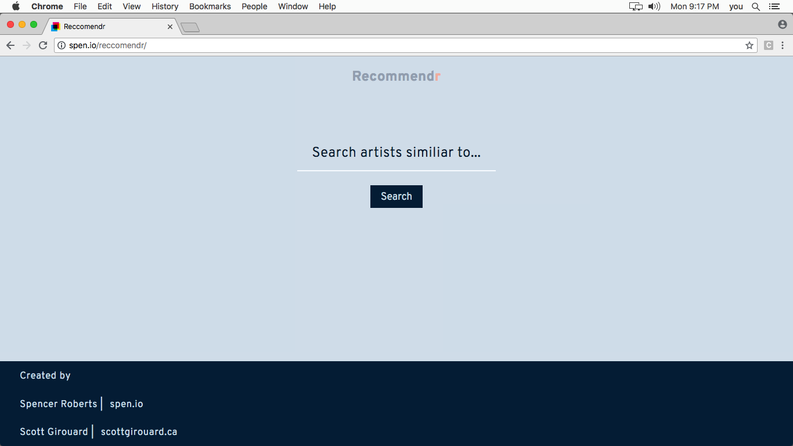
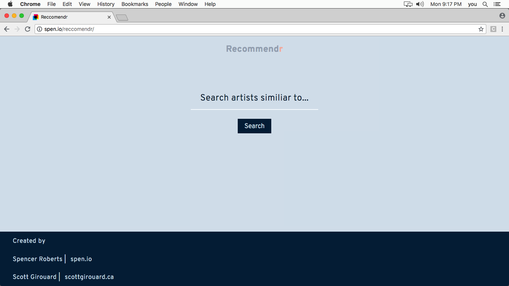
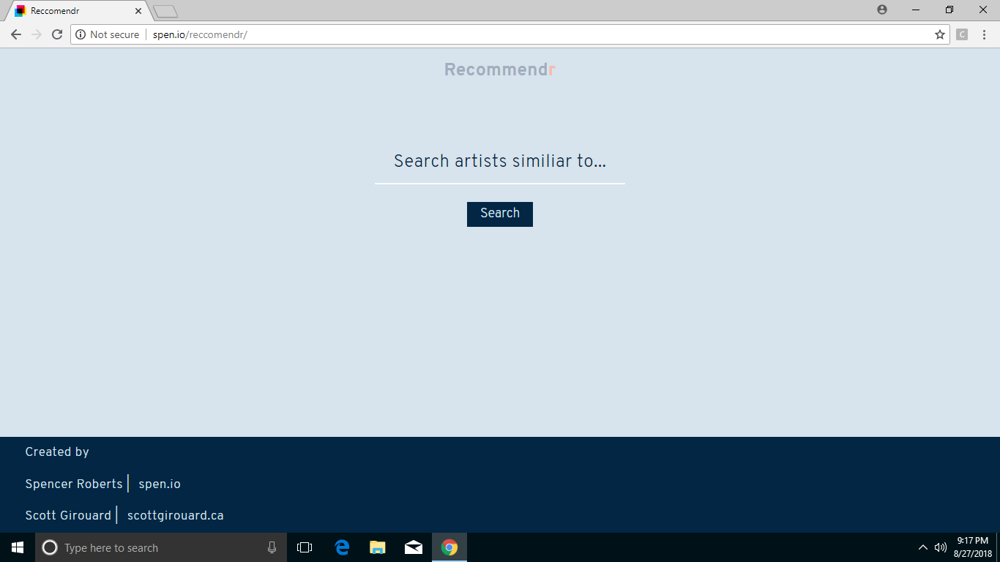
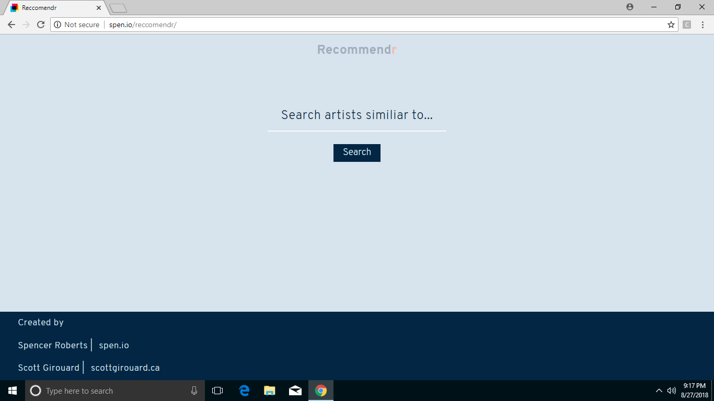

An equally simple and important feature of CSS:
A presentation for all "pixel perfect" aspiring developers...
The web is available on so many devices in 2018 that it becomes increasingly difficult to optimize a sites performance to be impecable across the board;
Websites are easily adaptable to all these uncommon and/or obscure browsing circumstances, and we have the power as developers to continue pushing the accessibility and dependability of the sites we create.
The "Color-Adjust" Property is a great way to begin:
The two approaches are:
color-adjust: economy;
and
color-adjust: exact;

Economy:
The user agent is allowed to make adjustments to the element as it deems appropriate and prudent in order to optimize the
output for the device it's being rendered for.
For example, when printing, a browser might opt to leave out all background
images and to adjust text colors to be sure the contrast is optimized for reading on white paper. This is the default.
Exact:
The element's content has been specifically and carefully crafted to use colors, images, and styles in a thoughtful and/or
important way, such that being altered by the browser might actually make things worse rather than better. The appearance
of the content should not be changed except by the user's request.
For example, a page might include a list of information
with rows whose background colors alternate between white and a light grey. Removing the background color would decrease
the legibility of the content.

.png)

.png) 

 
